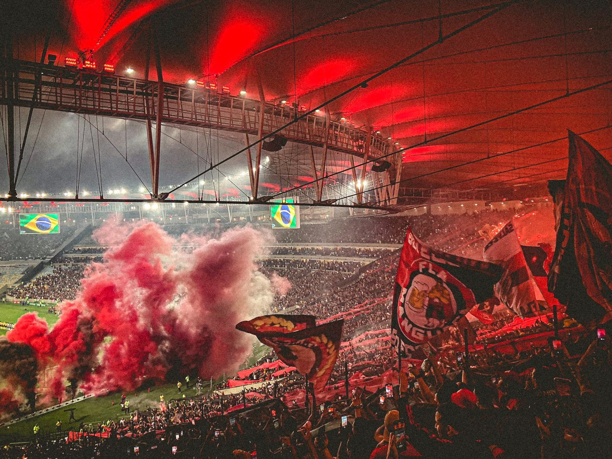
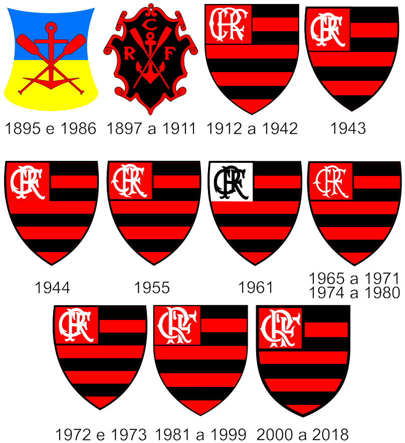
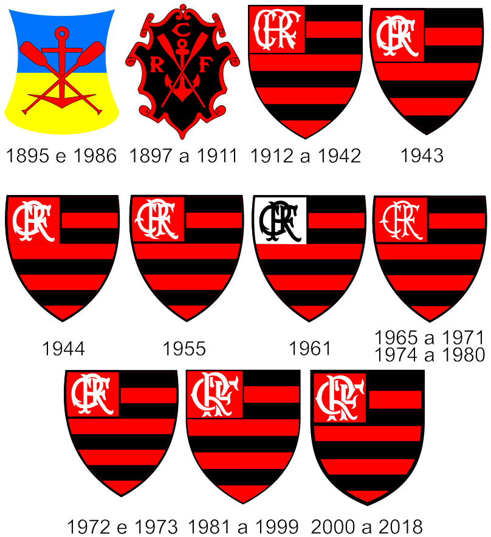
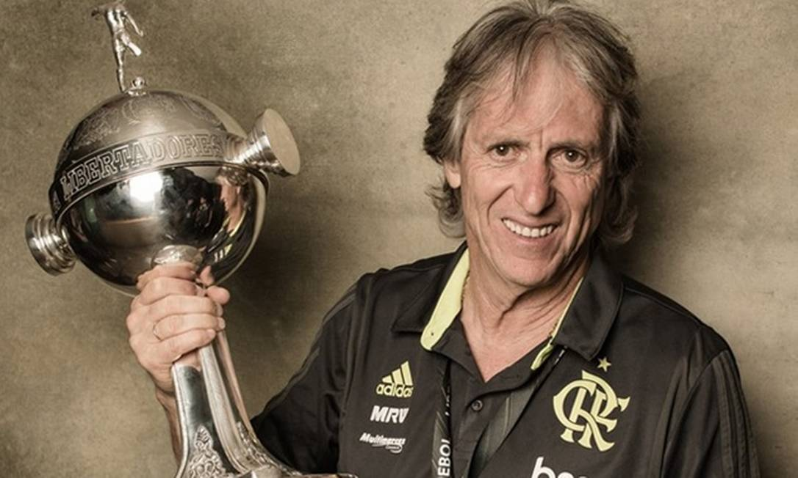

Clube Regatas do Flamengo
Bem-Vindo, Torcedor!
Conheça o clube mais querido e mais amado do Brasil e do Mundo! O Clube Regatas do Flamengo.
A emoção do torcedor.
Ser Flamengo é ser humano e ser inteiro e forte na capacidade de querer. É ter certezas, vontade, garra e disposição. É paixão com alegria, alma com fome de gol e vontade com definição. É ser forte como o que é rubro e negro como o que é total.
A história do Clube Regatas do Flamengo.
O Flamengo foi fundado em 17 de novembro de 1895 para as disputas de remo. A entrada da equipe no futebol aconteceu em 1912. Atualmente, o time rubro-negro é o maior vencedor da história do Campeonato Carioca, com 31 títulos. Segundo diversas pesquisas, é o clube com o maior número de torcedores do País.
 
Os maiores ídolos do Flamengo.
Gabriel Barbosa Almeida
Mais conhecido pela torcida como Gabigol, fez o seu nome e história no clube logo em seu ano de estréia, onde suas principais conquistas foram o Campeonato Brasileiro Série A e a Conmebol Libertadores no ano de 2019, sendo o principal artilheiro de ambas as competições e sendo decisivo em jogos importantes e mostrou na final da Libertadores de 2019 que é um jogador Predestinado, pois foi o autor dos dois gols da virada nos minutos finais da partida final contra o River Plate da Argentina.
Gabriel Barbosa segue no Flamengo até hoje (24/07/2023) e ainda é peça fundamental no clube, além disso ele conquistou mais uma taça Libertadores em 2022 na qual foi decida com o gol do mesmo e nesse mesmo ano conquistou a Copa do Brasil. Com tudo, o nosso Predestinado foi coroado como Príncipe da Gávea.
Veja os dois gols de Gabriel na final da libertadores 2019 clicando aqui.

Jorge Fernando Pinheiro de Jesus
Conhecido como Jorge Jesus, o Mister conquistou o seu espaço no coração do torcedor Rubro Negro comando a equipe como técnico em apenas uma temporada no ano de 2019, na qual ele atingiu uma marca incrível possuindo mais números de títulos do que derrotas em sua passagem pelo Flamengo (5 títulos e 4 derrotas).
Sua passagem pelo Flamengo além de trazer títulos de expressão para o Flamengo como o Campeonato Brasileiro e a Conmebol Libertadores, ele trouxe de volta ao futebol brasileiro ao alto nível, mostrando isso no campeonato Mundial de Clubes que apesar da equipe sair derrotada por 1x0 na prorrogação, enfrentou a equipe Inglesa do Liverpool novamente em uma competição Mundial em um jogo que foi disputado.
Veja o futebol da equipe comandada por Jorge Jesus clicando aqui.
Arthur Antunes Coimbra, O Zico.

O ex-futebolista brasileiro que atuava como meio-campista, sendo considerado um dos melhores jogadores da história, fez parte de conquistas que elevaram o patamar do Flamengo durante a década de 80. Sendo elas a conquista dos campeonatos brasileiros (1980, 1982, 1983 e 1987), a taça Libertadores em 81 e também o Mundial de Clubes de 81 em cima da equipe inglesa, o Liverpool.
Além de ídolo no Flamengo, Zico se consagrou como uma referência no mundo do futebol, pois o seu desempenho em campo o fez ser admirado por todos que o viram jogar, inclusive o nosso Rei do Futebol Pelé tinha uma admiração enorme por Zico. Inclusive ele marcou seu nome jogando na seleção brasileira mesmo não sendo campeão da Copa do Mundo com a Amarelinha, ele foi convocado em três chances e anotou 5 gols na competição.